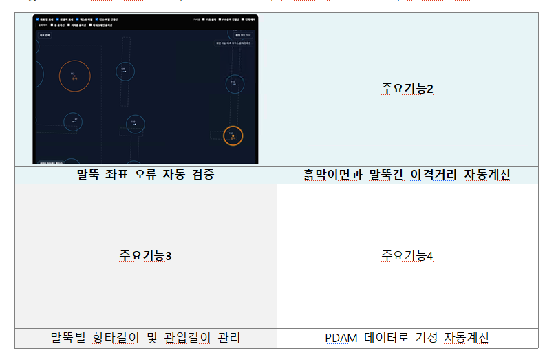
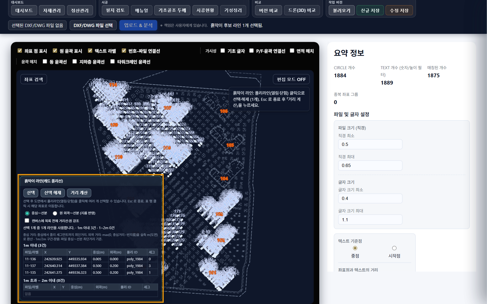
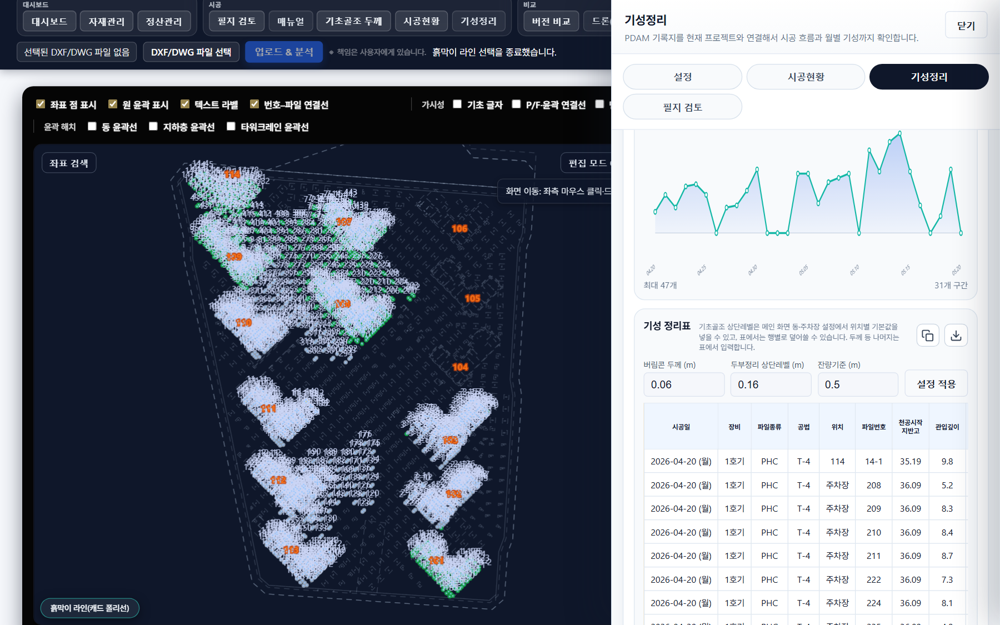
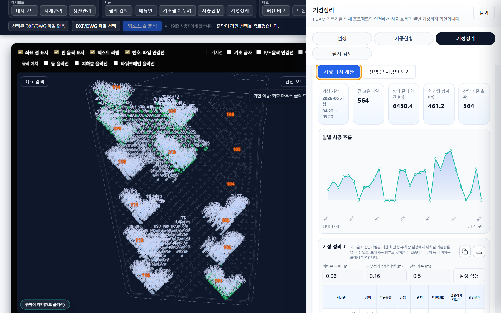

말뚝 좌표 오류 자동 검증
말뚝·번호 매칭 및 중복 좌표 검사 / 첨부된 실제 도면 화면

흙막이–말뚝 이격거리 자동 계산
중심·외곽 거리 구분 / 1m 이내 및 1~2m 구간 결과 확인

말뚝별 항타길이 및 관입길이 관리
PDAM 연동 파일별 시공 기록 / 현재 캡처는 관입길이 열을 표시

PDAM 데이터로 기성 자동 계산
월별 파일 본수·항타길이·잔량 집계 / 기성 다시 계산
실제 화면 자료 재구성 · AI 생성 이미지 아님. ① 사용자 첨부 화면, ②~④ 작업 폴더의 매뉴얼 캡처 사용.
수치는 기존 캡처의 예시이며 현재 현장 실적을 의미하지 않습니다.